快速执行能力才是关键#
“死了么”APP突然爆火，网友热议
近日
一款在苹果应用商店上架的
“死了么”APP爆火
相关话题在社交平台持续发酵
目前，该款App在苹果付费软件排行榜位列第一。
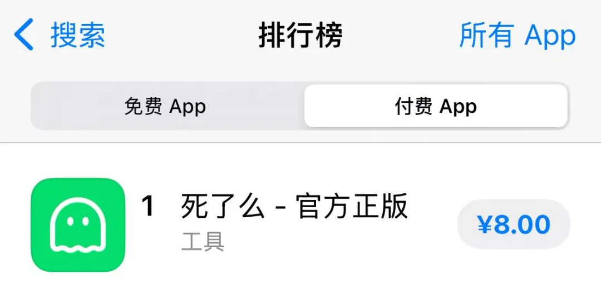
据介绍，该应用是为独居人群打造的轻量化安全工具，用户需要设置紧急联系人并签到，若连续多日没在应用内签到，系统将于次日自动发送邮件告知紧急联系人。
软件界面显示，APP中间有一个“签到”按钮，并提醒“2日未签到，系统将以用户的名义，在次日邮件通知用户的紧急联系人”。
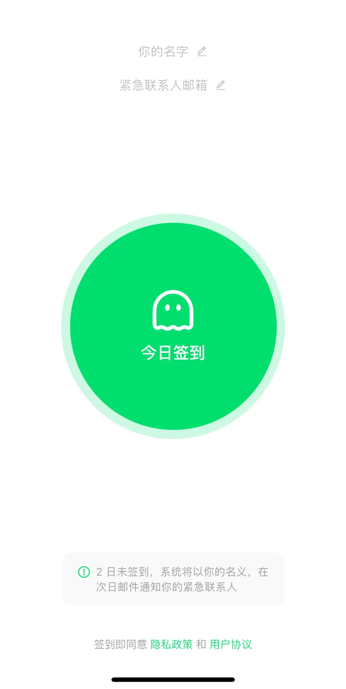
“死了么”APP瞬间冲上微博热搜
引发网友热议
有网友认为
该软件对于独居老人和年轻人来说
非常方便
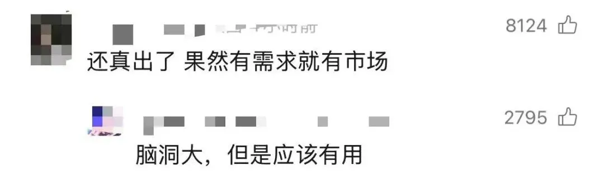
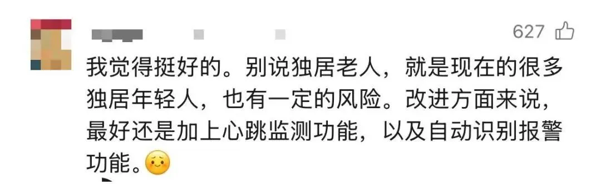
但也有网友认为
打卡的流程繁琐，定价偏高
并对隐私安全表示担忧
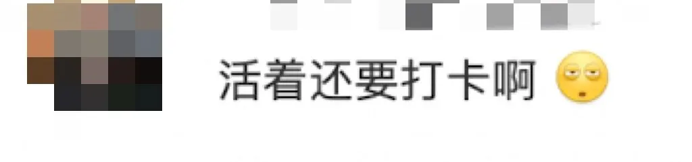
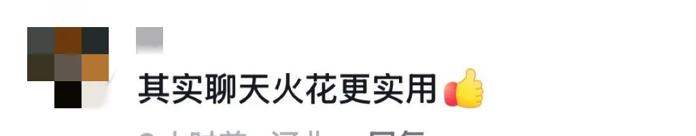
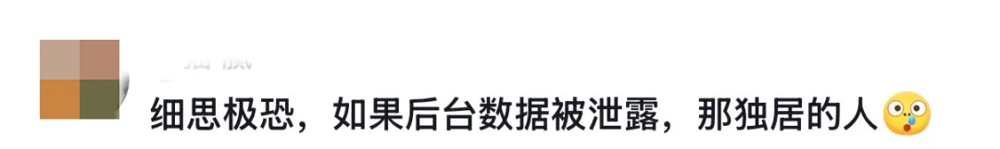
此外
有不少网友对产品名称与功能
提出了更多的优化建议
有人提出可以改成通过短信通知紧急联系人、优化签到形式等，还有更多网友认为软件名字“死了么”不好听，建议改成“活着么”。
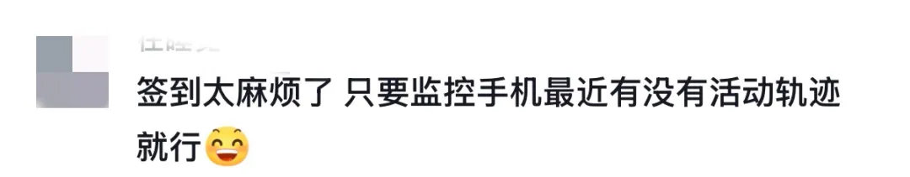

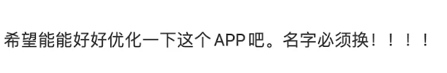
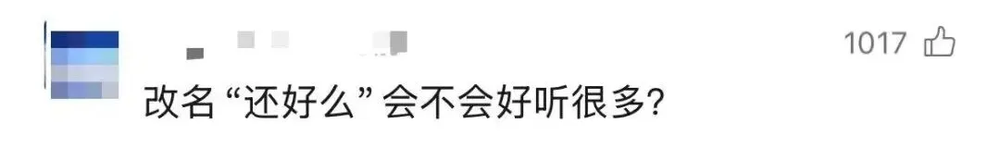
短评
“死了么”走红，独居风险不容忽视
1月8日，苹果应用商店一款名为“死了么”的App受到广泛关注。据介绍，该应用是为独居人群打造的轻量化安全工具，用户需要设置紧急联系人并签到，若连续多日没在应用内签到，系统将于次日自动发送邮件告知紧急联系人。1月10日，该款App在苹果付费软件排行榜位列第一。
**很多网友认为，产品名字“死了么”不好听，建议改成“活着么”。**不过，其命名对死亡毫不避讳，既刺眼也惹眼，大概也是其走红的一个原因。除此之外，“死了么”的界面和功能设计也非常简单直白，只有“设置名字”“今日签到”“紧急联系人邮箱”三个功能。至于为何能让不少用户心甘情愿付费下载，恐怕主要戳中了用户心理上的痛点，实用价值倒可能是其次。
该产品负责人称，产品针对年轻人设计，**一些独居人士比较孤独也比较担心自己的人身安全，于是就想到可以用工具来解决这个担心。**不过根据产品逻辑，仅“多日未签到”“次日以邮件通知”这两点就说明，该产品若想对用户产生现实上的帮助，要克服的短板还有很多。比如，国内用户对邮件的使用频率并不高，邮件送达的效果很可能并不理想；再者，一些紧急情况下，“多日未签到”的响应模式也无法起到紧急救助作用。
更重要的是，负责人提到“死了么”并非团队原创的名字。早在多年前，就有一些网友担忧，自己独居突发疾病意外身亡却无人善后，希望有人能做一款叫“死了么”的软件。**一些工作在外的人察觉到，不只是独居老人要面对“孤独死”，即无人知晓的死亡，正常工作的年轻人也面临同样的问题。**现在的“死了么”App或许还没法为独居人群真正提供有效帮助，但年轻人借助这个话题揭开了“孤独死”的担忧——这一社会现象逐渐年轻化，成为独居人群普遍的心理焦虑。
随着城市化和人口流动，年轻人外出务工、独居成为常态，同时也由于工作压力、社交圈缩小等原因，与家人、朋友的联络越来越少，这导致他们担心自己突发疾病、发生意外事故却无人知晓。相比之下，“孤独死”的年轻化在日本、韩国更为凸显，不少政策最终都指向“鼓励其重新同社会建立联系”，但效果恐怕有限。这是因为，并不是说独居即孤独，孤独的本质是无法建立情感的联系，而“孤独死”往往是物理空间的“远距离关系”、心理层面的“情感疏离”以及社会支持网络断裂等多方面造成的，强化社交固然重要，但不能完全据此应对独居风险，尤其是突发意外导致的生命风险。
如今“死了么”App走红，不妨看作主动自救的积极尝试，填写“紧急联系人”的时候，就是一次与他人重建联系的契机。在此基础上，社区支持、公共政策等层面也有必要加强介入，“孤独”虽是人生的必修课，但公共治理必须兜住最基本的关怀。
南方都市报（nddaily）、深圳大件事（nandusz）报道
整理：南都官微运营部 李晶
视频：南都官微运营部 白倩子
评论：南都快评
突然爆火！“死了么”App创始人：考虑涨价
简洁的白绿配色页面中，只有“今日签到”功能，下方显示：2日未签到，系统将以你的名义，在次日邮件通知你的紧急联系人。近日，这款名为“死了么”的App爆火。有人认为符合独居人士需求，也有人质疑名字“不吉利”，建议改名为“活着么”，且收费8元的App功能过于单一。
1月11日，“死了么”App开发商月境（郑州）技术服务公司的创始人吕先生告诉南都N视频记者，名字的灵感来自网友，“我不认为‘死了么’不好听，它更能提醒我们珍惜当下”。
他表示，早期成本不到1500元，现在的下载量比之前多了大概300倍，主要依靠用户购买App实现盈利，预计之后会涨到14元或者15元。“我们还在考虑融资，金额大约是50万美元。”
他曾经在深圳独自打拼过四五年，“大城市工作的年轻人普遍有种感受，要么特别亢奋，要么极其孤独。”这种孤独往往伴随着不安全感，“我们希望社会更加理解这些独居人士的情感”。
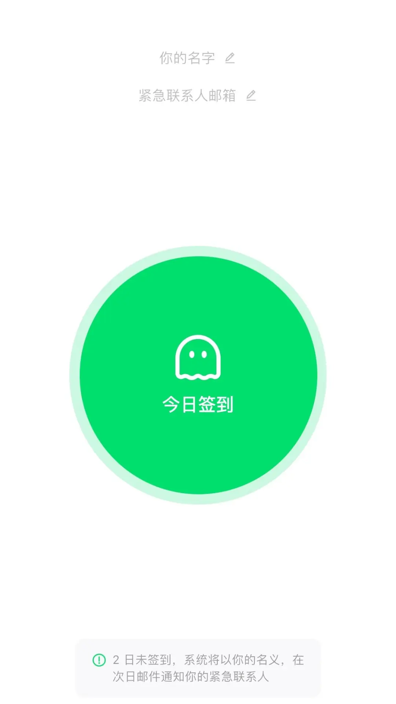
“名字灵感源自网友”
南都N视频：开发“死了么”App的初衷是什么？
**吕先生：**近几年，我们关注到很多网友在讨论并明确提出需求，希望能有一款独居守护App，我们只是在响应用户需求。App暂时只有签到打卡，以及2日未签到，次日便会发邮件通知紧急联系人的功能。
早期投入的成本挺低的，不到1500元，但现在，包括未来可能会产生的成本，正在逐步增加。
我们计划把主要精力投入到产品打磨中，例如丰富短信提醒功能、考虑增加留言功能。我们还想推出社区功能，大家可以在App内分享自己的故事，像树洞一样。
南都N视频：App为何起名“死了么”？有人建议将“死了么”更名为“活着么”。
**吕先生：**这个名字是网友起的，当时有人发帖说希望有App守护独居安全，建议这款App的名字就叫“死了么”。
感谢大家对新名称的积极建议，我们都会认真研究和考虑，但目前还没有决定好。改名可能会让一部分人感到更舒服，但这款App的主要受众是独居年轻人，他们大多认为现在的名字带有一定娱乐属性，会比较喜欢，所以我们正在综合考虑这件事。
南都N视频：创业的过程中，遇到过哪些挑战？
**吕先生：**最大的挑战是，我们都不擅长营销，导致早期没有流量。App是2025年5月开始开发，6月上架的，刚上架时是免费的，不过当时流量非常少，后来又从免费制改为付费1元，直到前几天网友们发现了这款App，它才开始火了，现在的下载量比之前多了大概300倍，还在继续飙升。
南都N视频：部分网友认为，“死了么”App与“续火花”的功能并无区别。
吕先生：“续火花”（社交平台中，好友连续多天互发消息后获得的特殊标识），是对方能感知到的一种互动行为，但很多独居人士并不希望去打扰别人，只是想在意外发生的时候有人知道，我们的App更契合独居人的心理。
“之后可能会涨价”
南都N视频：你们团队是怎么组建起来的？
**吕先生：**我之前在深圳工作，团队中有一名成员是我在深圳认识的朋友，另外一位是我在线上认识的朋友。我是牵头人，我们3人不谋而合，很愿意去做这个App。
我们分别负责产品、设计以及研发，我主要负责产品，例如需求、定位、设计等。我们也有其他工作要忙，但绝大部分时间都用在这款App上。
目前，我们在不同城市生活，以线上办公为主。最近正在考虑融资，金额大约是50万美元，如果这笔融资到账，我们可能会考虑转移到线下办公，暂时不考虑扩招。
南都N视频：这笔50万美元的融资进展如何？
**吕先生：**具体的事项还在沟通。之前我们考虑，融资100万元人民币换10％的股份和分红，但后来考虑到长期发展以及大家的投资热情，决定将金额提升到50万美元。
南都N视频：为什么从免费制改为付费制？你们的盈利模式是什么？
**吕先生：**两天内未签到打卡需要发邮件通知紧急联系人，以及即将上架的未打卡可短信通知紧急联系人功能，这些服务都是有费用的。随着目前用户量的激增，我们的费用也一直在上涨，所以需要用一个比较合理的价格来支撑我们长期去做这个事情，给大家提供稳定的服务。
之后我们可能还会考虑涨价，但具体什么时候再涨，目前还没有明确计划，预计会涨到14元或者15元。
不过，App是买断制的，只要买了未来就不会产生其他费用。现阶段不打算在端内增加广告，因为这对用户来讲是一种骚扰，我们还是想要保障用户的体验，商业化并不是核心目的。因此，我们主要依靠用户购买App实现盈利。
未来，我们还是决定将主要精力放在产品本身，并不打算在营销上投入太多金钱和时间成本。这次的经验也告诉我们，应该让产品自发地去传播。
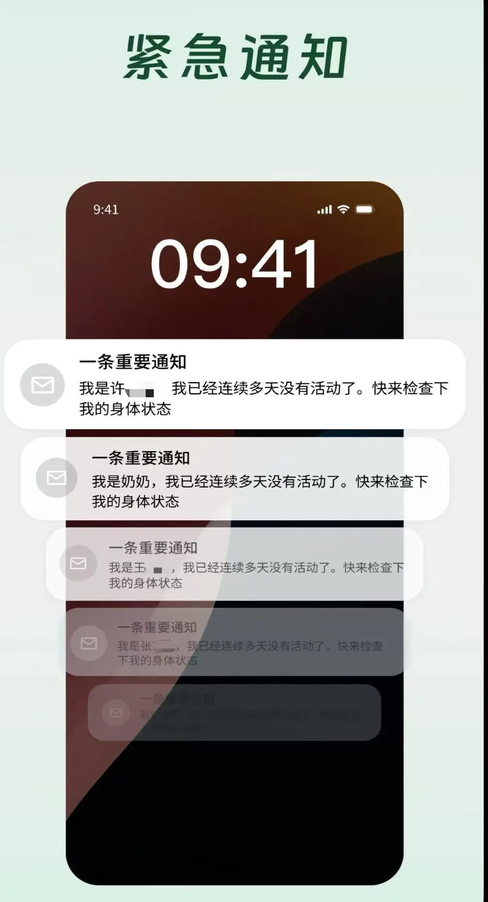
“预想过未来流量会越来越少”
南都N视频：设计之初，是否预料过它会这么火爆？你担心这是“昙花一现”吗？
**吕先生：**我想过它会“火”，但没想到这么“爆”，现在的曝光量可能达到上亿次了。想过它会火的原因是，毕竟App的上线能够弥补部分用户需求的缺失，但这么多博主、网友去自发分享，在我们的预料之外。
我们也预想过，未来流量肯定会越来越少，而我们要做的是去打磨产品，调整好心态。现阶段是高峰期，但我们更希望未来是平稳的。
南都N视频：你对死亡的理解是什么？
**吕先生：**我的座右铭是，人只活一次，我们要把这一生活得更精彩一些，死亡并不可怕。重要的是，在有限的生活中做了热爱的事情，我认为这个是最重要的。我并不认为“死了么”这个名字不好，这个名字更能提醒我们珍惜当下。
南都N视频：目前App有哪些受众？
**吕先生：**我们的目标人群是一二线城市中的独居人士，以25岁左右的女性为主。一个独自打拼的年轻人非常容易有强烈的孤独感，因为没有太多人能交流，这种孤独感伴随着不安全感，而这种不安全感会让人担心意外突然发生，但却没有人知道。
所以我也希望，能够唤起大家对独居人士的关怀，更多地去理解他们，因为他们是被忽视的群体，这也是我们开发这款App的初心。
南都N视频：这份初心源自哪里？
**吕先生：**因为我就是这类人。我曾在深圳独自打拼过四五年，深圳很好，和朋友在一起玩的时候特别开心，但如果周末没有约上朋友，或者工作日加班到很晚才回家，那种落差感特别强烈。
这也是在大城市工作的年轻人的普遍感受，要么特别亢奋，要么极其孤独。
我知道这种孤独感、不安全感是一种不好的情绪。很多长辈会觉得大城市收入高，但他们很难去理解这种情感，也没办法切实地表达关怀。
南方都市报（nddaily）报道
出品：南都即时
统筹：向雪妮 韦娟明
采写：南都N视频见习记者 付冰洁
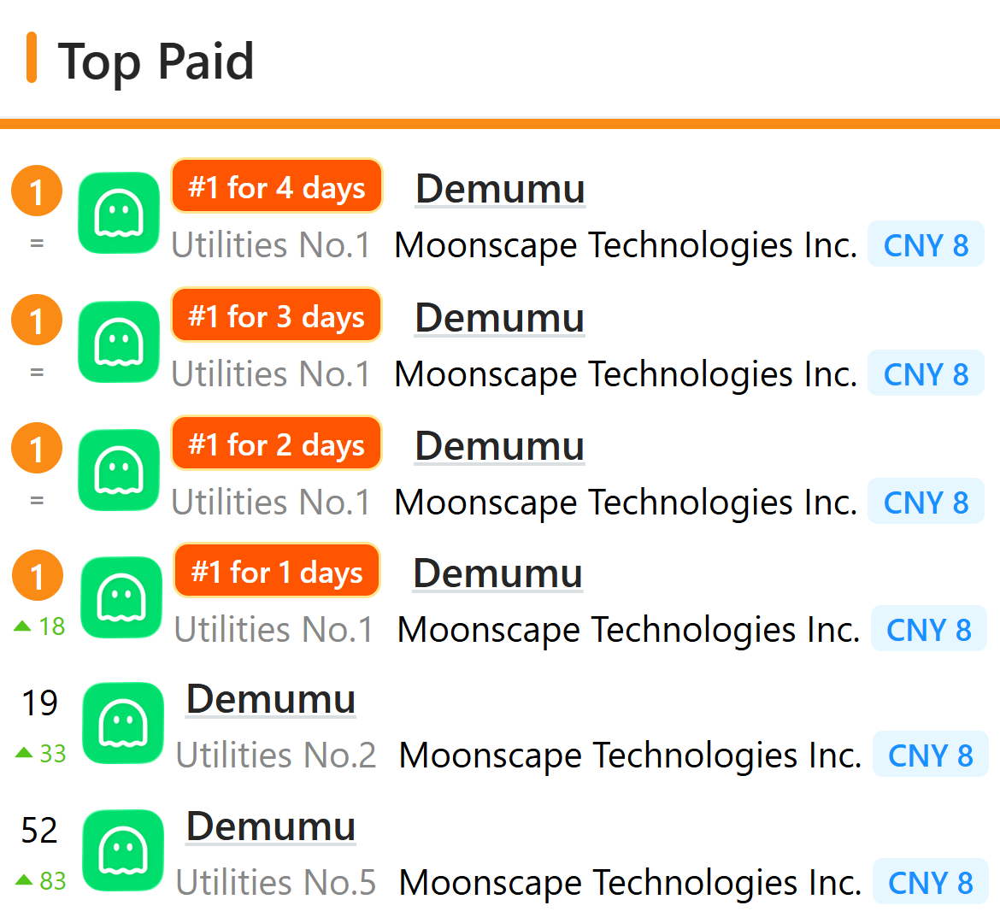
上图是截止到撰写本文时，近几日该 App 在 iOS App Store 中国大陆区付费类中的日排名变化。
从该 App 的商业化成功案例可以得出：
Gen Y 后半和 Gen Z 及以后世代的消费者群体，对产品的溢价消费意愿集中在抽象的情绪价值而不是实用价值。
开发团队的地理位置环境和体量越来越淡化，只要能接入网络，有足够好的创意，至少从短期的商业化角度考虑就能实现盈利。
死了么拒不改名！活了么App正式上线，太狠了
最近，一款名字直白得让人心惊的 App——“死了么”，在社交媒体上彻底爆火。
凭借切中“独居安全”这一社会痛点，它在短短几天内便登顶苹果 App Store 付费榜首位。
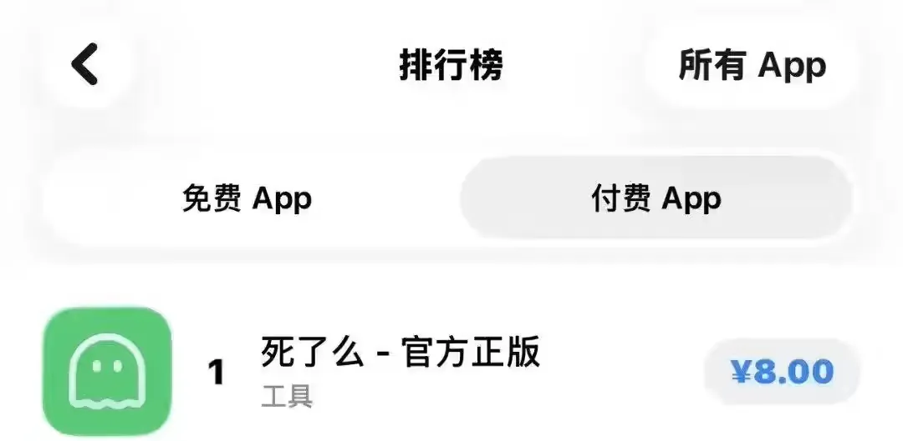
这款 App 的逻辑极其简单，专为独居人群设计，用户只需预设紧急联系人邮箱并每日“签到”。如果连续两天未操作，系统将在第三天自动发送预警邮件，防止“独居死”悲剧发生。
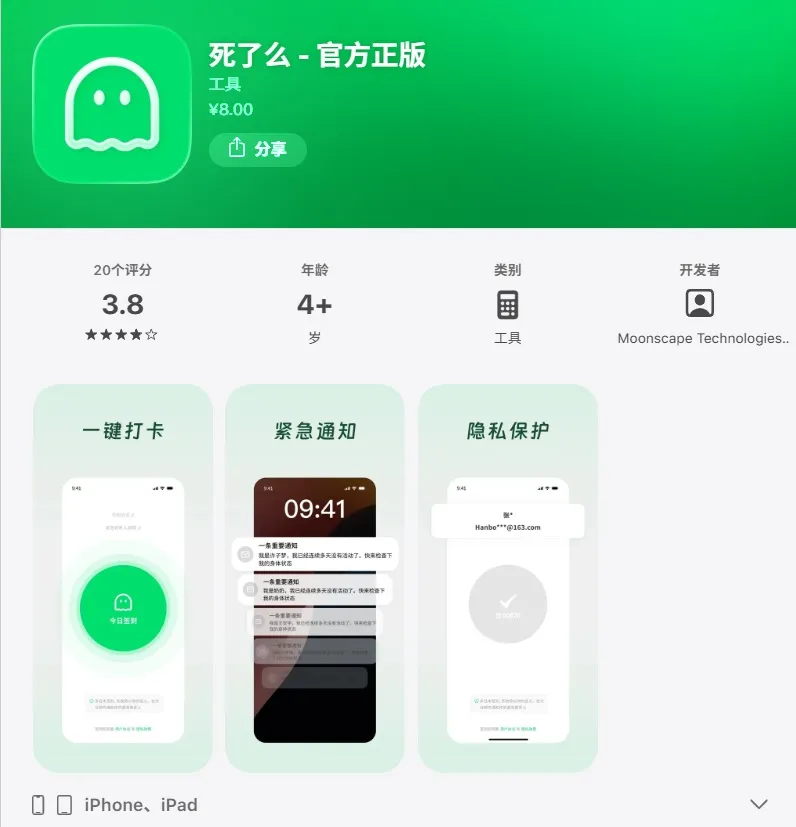
创始人郭先生透露，项目初期投入仅 1000 多元，由 3 名 95 后通过远程协作，不到一个月便开发完成。
面对突如其来的热度，郭先生直言“没想到会这么火”。近期，该 App 付费人数已暴涨 200 倍，开发者计划按 1000 万估值出让 10% 股份。
虽然功能扎实，但不少网友吐槽名字太“晦气”，**纷纷建议改名为更有温度的“活了么”。**对此，郭先生回应称，目前暂未收到改名通知，暂无更名打算。
然而，巨大的市场缺口和较低的技术壁垒，让效仿者迅速入场。尤其是名字呼声最高的“活了么” App 已经正式在苹果商店上线。
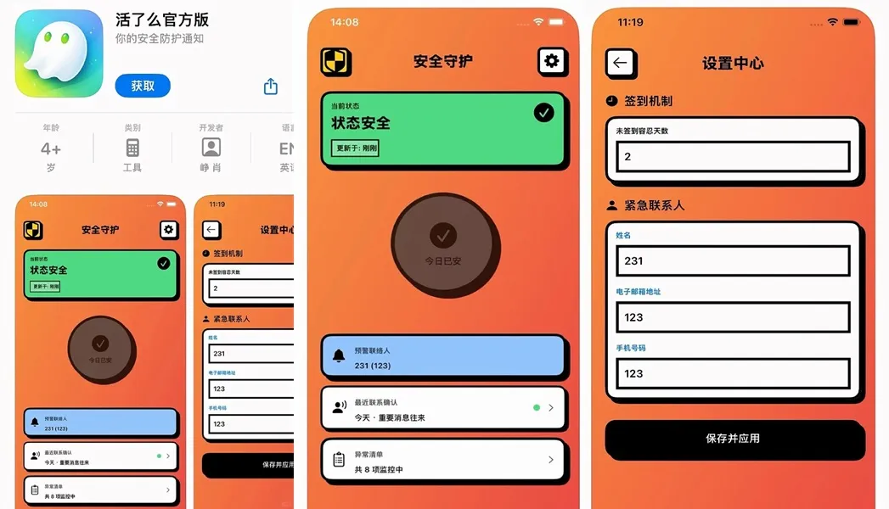
与“死了么”因服务器压力将定价从 1 元调至 8 元不同，“活了么”目前主打完全免费，直接开启“价格战”，太狠了。
据其开发者透露，自己拥有超过 10 年的资深开发经验，但在 AI 工具的加持下，代码编写、逻辑纠错及 UI 生成等环节被极致压缩。从立项、编码到最终提交审核，**全程仅耗时 6 小时。**这种“硅谷式”的极速迭代，让传统开发模式显得有些沉重。
面对“活了么”的免费冲击，同时封堵了其改名空间，郭先生表现得相对淡定。他认为这款产品的核心竞争力不在于技术壁垒，而在于对用户痛点的敏锐洞察。未来，他们还计划推出更具针对性的适老化应用，深耕老年人的独居安全市场。
从“死了么”的意外走红到“活了么”的AI极速截胡，我们看到的不仅是独居青年对“孤独死”的集体焦虑，更是 AI 时代下产品逻辑的巨变。一个好创意加上 AI 的效率，可以在半天之内撬动千万级的赛道。
如果是你，你会愿意为了这份“独居安全感”支付 8 元，还是选择免费的替代方案？你觉得“死了么”这个名字是直击痛点，还是真的太晦气了？欢迎留言说说你的看法。
从以上 App 的快速开发并上线产品可以看出，在舆论曝光度足够的情况下，快速模仿并改善原产品需求同样可以获取流量。
每周AI观察:Vibe Coding时代的面试
我们组的面试方式变了。
从写leetcode题（我以前也get不到考这种题的意义）变成让候选人实现一个完整功能。如果你不用AI编程，除非手速超快，否则根本完不成。这种改变看似只是工具的升级，但实际上正在重塑我们对”优秀工程师”的定义。
差距被放大了#
原来的算法面试，写不出来和写得出来之间，可能只是一个提示的差别。但现在让你实现一个界面或一个功能，完成度可以是天差地别。
有人能在一小时内做出一个基本可用的页面，交互流畅，样式得体。有人却在和AI的来回修改中越陷越深，最后连基本功能都跑不通。同样是用AI工具，结果却大相径庭。
这种面试方式，把候选人之间的差异放大到了前所未有的程度。
沟通能力成了硬通货#
在这种新面试下，沟通能力变得特别关键。不仅是和面试官的沟通，和AI沟通好同样重要。
我最近观察到一个有意思的现象:不善于沟通的人往往对vibe coding比较失望。这不仅体现在讲不清楚需求，更重要的是预期管理的问题。
你不能给沟通对象设定一个好的预期，就很难有好的沟通策略。拿vibe coding举例:
明确告诉AI要改哪些文件，可以大幅减少AI改错的情况 时不时把反馈提给AI让它重构，可以避免工程越写越歪 但如果把AI想得太差，事无巨细都说得一清二楚，效率又会很低 这种把握度，恰恰考验的是对工具能力边界的理解，以及与之协作的能力。
品味变得可以考察了#
另一个变得重要的是品味。
这个东西在传统面试里真不太好考察，顶多看看代码风格。我想没有前端面试会去计较CSS里的配色吧。但现在因为面试做的东西展示性强了很多，品味这个以前很虚的东西，突然变得具体可见了。
界面布局是否合理?交互是否流畅?视觉是否舒适?这些过去被认为是”设计师的活”的东西，现在成了工程师面试的考察点。
所以现在应该多花点时间观察和揣摩各个出色的产品。品味不是天生的，是可以通过大量观察和实践培养的。
技术深度依然重要，但体现方式变了#
那这种情况下是不是技术就不重要了?并不是。
今天我就遇到了一个特别值得学习的面试者。他在一家澳洲的大厂工作，公司提供了非常完备的AI编码工具给员工用，所以他很习惯这套面试方式。他很快就把我让他实现的功能写出来了，经过一两轮反馈，完成度又提高了不少。
但更厉害的是:他在AI开始工作前，会先给我讲一下他认为AI会在哪里做修改。等AI写完，他会打开对应的地方来验证一下。
这个策略让我对他的好感度一下子提升。一个能指挥AI、让AI放大自己生产力、当AI出错时能给与正确指示的工程师形象就这样树立起来了。
这才是技术深度的新体现方式:不是你能不能手写红黑树，而是你能不能预判AI会怎么实现，能不能快速验证AI的输出是否正确。
工具还没跟上#
目前的面试工具好多都还没有适应这套范式。
比如今天用的Show Me Bug，原来他们一个网页端的IDE可以运行代码还挺好用的，但目前还没引入AI编程功能。所以现在最好用的还是视频电话然后共享桌面。
希望以后会有更好用的工具出来，专门为vibe coding面试设计。
AI作弊的悖论#
想起来不久之前有个很火的用AI帮面试者作弊的公司。但现在当使用AI成为重要的考察项目，作弊是不是也就无从谈起了?
如果面试本身就是要考察你和AI协作的能力，那用AI还算作弊吗?这个问题挺有意思的。
不得不感叹这两年的变化真的太快了。
从10.11那期我提到Claude Code让我一晚上写了5700行代码，到10.19那期提到AI让我们一周完成三周的工作，再到今天我们已经开始用vibe coding来面试新同事。
AI不仅改变了我们的工作方式，也在改变我们对”优秀工程师”的定义。沟通能力、品味、对工具的掌控力，这些过去相对软性的能力，现在都成了核心竞争力。
而技术深度依然重要，只是它的体现方式变了。
总结#
由于 Vibe Coding 的普及，对于小型项目的开发和商业化已经极大压缩了资源成本，更凸显了洞察用户需求以及快速实现创意（甚至非原创）的重要性，MVP 产品的开发是关键。
曾经，编码人员可以骄傲地说：
Talk is cheap, show me your code.
但是今后，所有人都可以说：
Idea is cheap, show me your demo.
2026.1.13